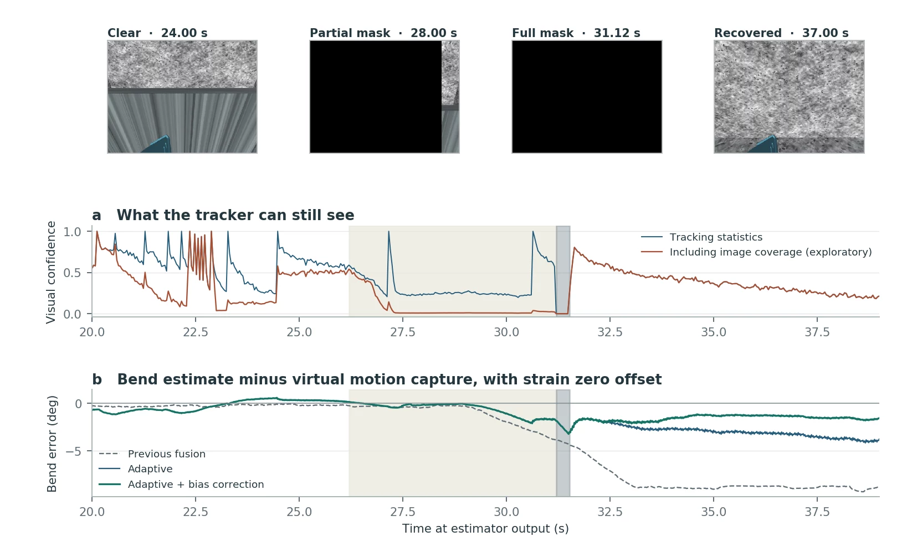
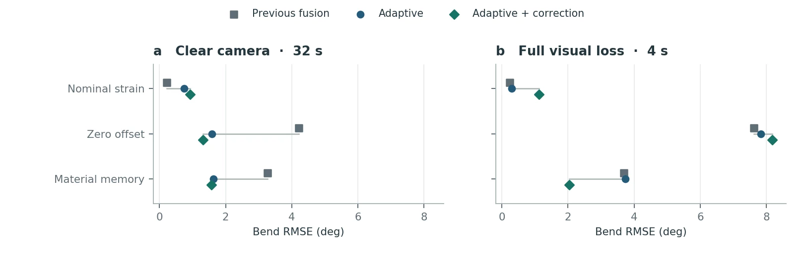

G1 · 视觉与应变置信度 / 2026-11-19 23:54（北京时间）
腕部视觉何时能纠正应变偏差？
四趟单门轨迹上，逐帧比较清晰、局部遮挡、短时与长时失视，以及应变零点偏移和材料回程。
大附件单独提供：传感输入与配准记录、估计轨迹与独立评分真值。
模型与场景

01腕部相机原帧、置信度与弯角误差
相机依次经历清晰、局部遮挡、全遮挡及恢复。横轴按估计器输出时钟对齐。

曲线与机制图

01图像清晰和失视，各自适合怎样的权重？
四趟重放的弯角 RMSE，分别对照健康应变、零点偏移和材料迟滞。

视频回放
01腕部视角与动捕同步回放
17 秒中同时查看实际输入相机图像、视觉置信度、估计弯角与虚拟动捕。
论文与报告
两页组会预览
第 1 页说明两路观测和修正条件，第 2 页给出五种方法的同轨结果与误差边界。
数据及运行记录
五种方法的分阶段评分
弯角、可观弯曲方向、弯曲向量误差和有效帧覆盖，含共同有效时刻。
逐趟配对结果
四条已知轨迹逐一核对，区分光照与应变观测工况。
视觉教学与重定位
逐趟记录修正次数、原生或几何配准恢复和输出时延。
因果性与失视检查
12 次截断输入、无视觉时冻结修正、两路均失时方差增长及弯曲方向跨界。
局部遮挡的图像覆盖检查
主试验后另做的同轨诊断。低维特征支撑会改变视觉相对权重。
应变置信区间的留出检验
按物理工况分层检查实际误差落入预测区间的比例。
独立飞行上的视觉标定
800 帧估计弯角和弯曲方向的方差尺度。
原始归档校验
两份数据包的大小、文件数和 SHA-256。
传感输入与配准记录
完整压缩数据，可单独下载并与校验表核对。
估计轨迹与独立评分真值
完整压缩数据，可单独下载并与校验表核对。